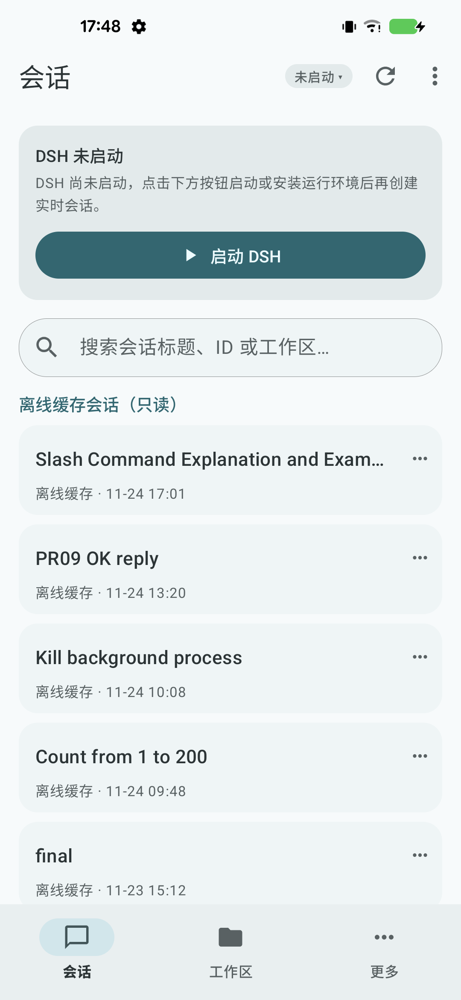
01-chats-stopped
会话页 · 未启动态（顶栏「未启动 ▾」药丸 + 启动卡 + 搜索框 + 离线缓存会话）
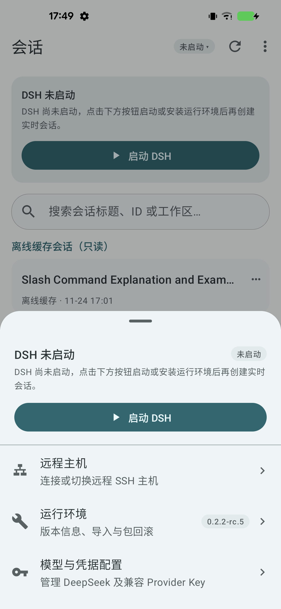
02-host-quick-sheet
顶栏宿主药丸弹出底部快速控制抽屉（启停 + 远程/运行环境/凭据入口）
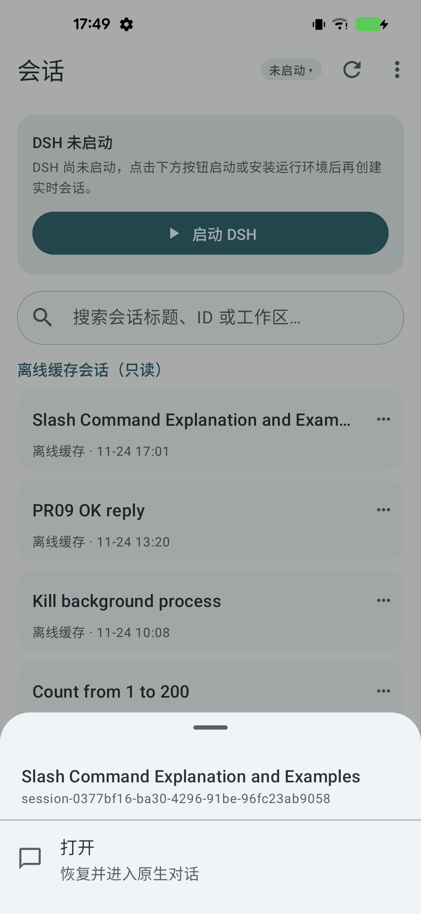
03-session-actions-cached
离线缓存会话操作抽屉（只读回看仅显露「打开」）
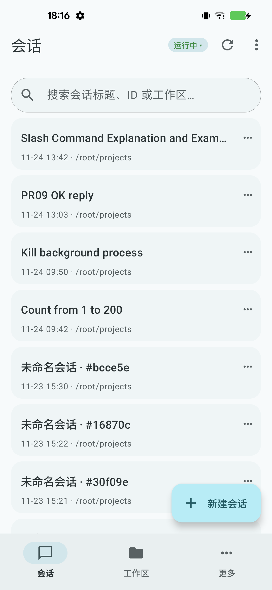
04-chats-ready
会话页 · 就绪态（绿底「运行中 ▾」+ 一屏 7+ 条紧凑卡片 + 未命名会话短标题 + ExtendedFAB）
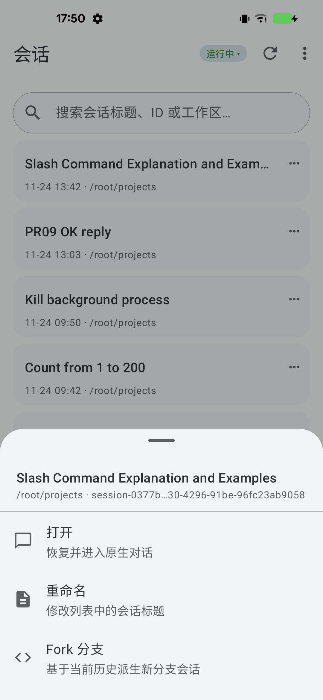
05-session-actions-live
就绪会话操作抽屉（打开 / 重命名 / Fork 分支）
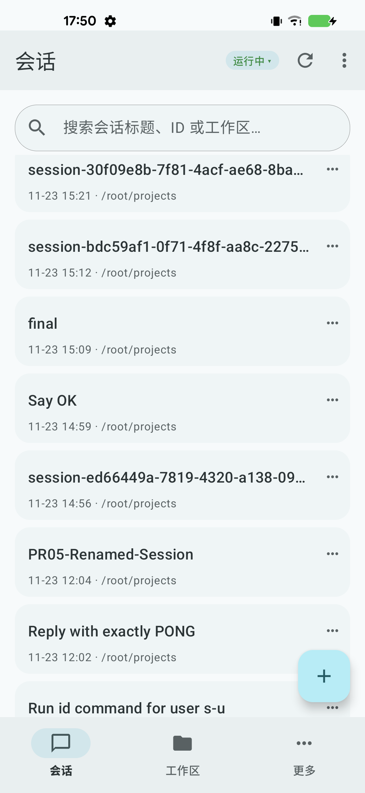
06-chats-scrolled-fab-shrink
会话列表下滚（AppBar 抬升 + ExtendedFAB 自动收缩为「+」）
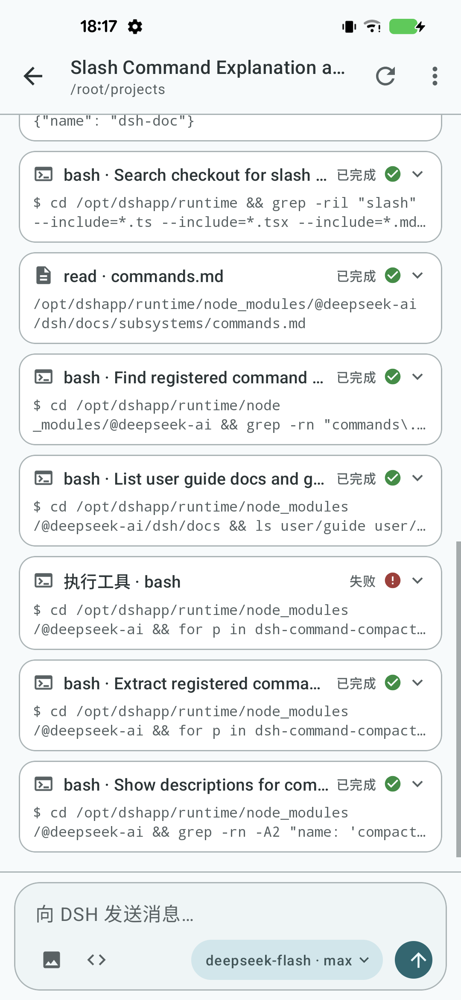
07-chat-conversation
原生聊天页（单层顶栏 + 16dp 结构化工具卡 + 底部模型胶囊与输入卡）
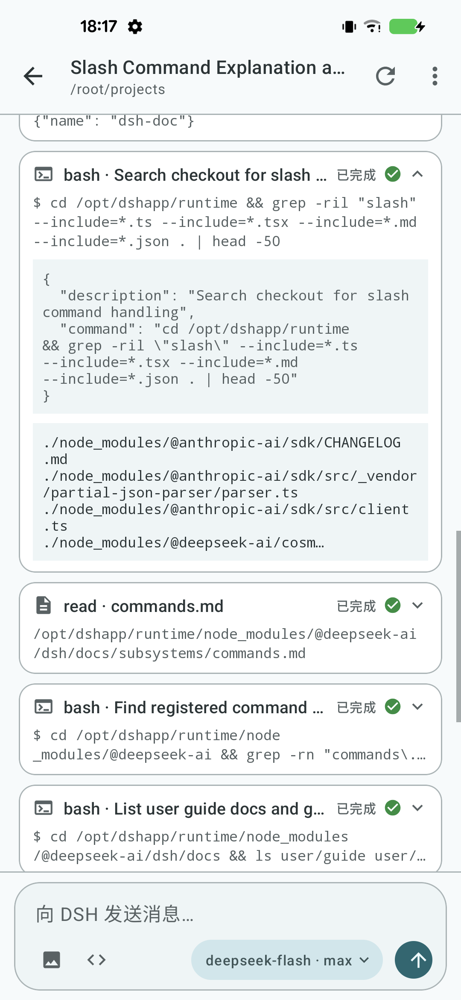
08-chat-tool-expanded
工具卡点击展开（旋转箭头 + 无转义美化 JSON + 可复制输出）
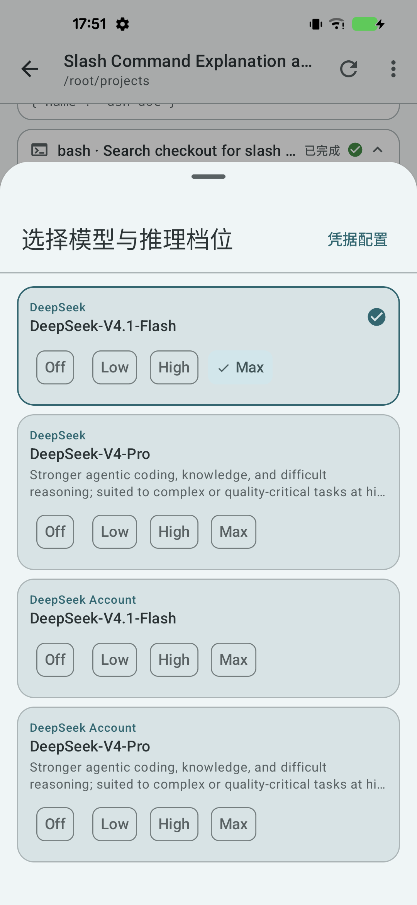
09-chat-model-sheet
模型与推理档位 BottomSheet（右上角直达凭据配置 + Filter Chip 高亮）
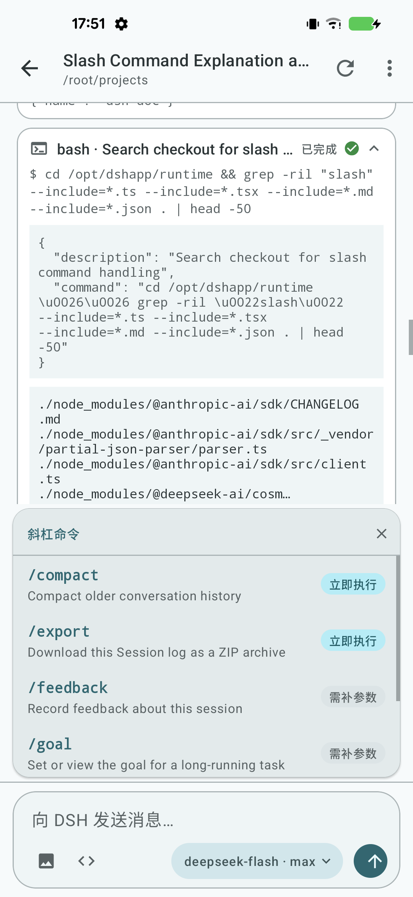
10-chat-slash-panel
斜杠命令浮层（/command + 说明 + 「立即执行 / 需补参数」徽章）
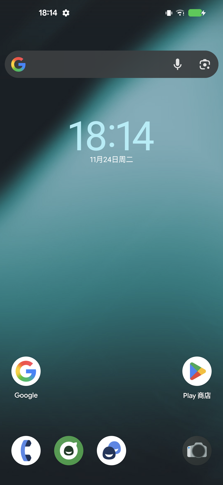
12-dark-chats-ready
深色模式 · 会话就绪页（OLED 1dp 卡片描边 + 「未命名会话 · #...」）
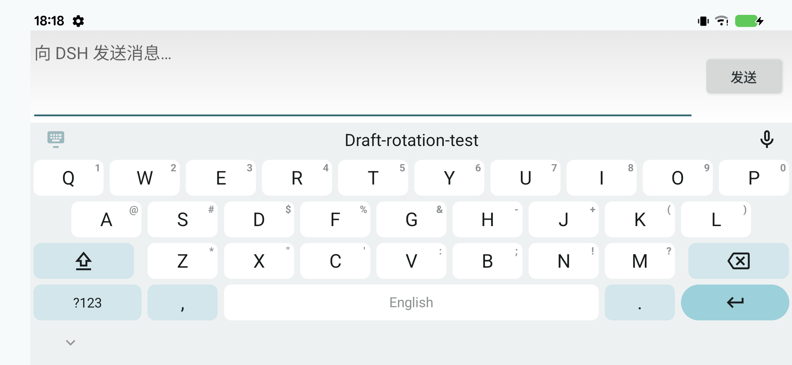
16-landscape-chat-ime-open
横屏 + 输入法聚焦（系统默认抽取模式，flagNoExtractUi 留待 Slice 5）